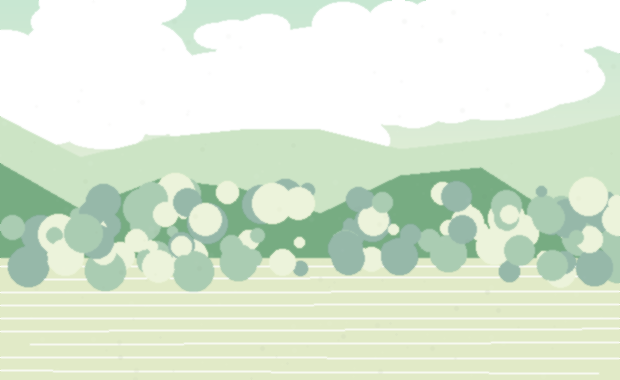
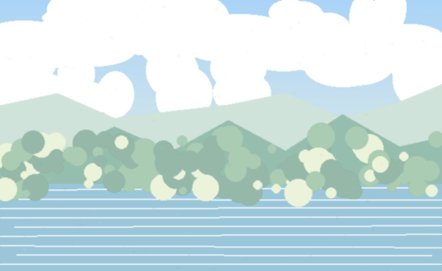

赤いものを
3つ見つける
名前ではなく、
小さな変化に目を向けてみましょう。
「おくのほそ道」 この視点で歩き始める ひとりで歩き始める
他者の気づきやAIが
今日の「まなざし」を提案
青空文庫『おくのほそ道』から、街の見方をひらく
名前ではなく、
小さな変化に目を向けてみましょう。
他者の気づきやAIが
今日の「まなざし」を提案
10分後に、そっと
お知らせします。
スマホを見る時間を減らし、
街の中に身を置く
今いる場所で
30秒、立ち止まってください。
風の音、遠くの音、足音、光、匂い。
いちばんに残ったものをひとつ覚えておいてください。
立ち止まり、五感をひらく
（音・光・風・匂い・気配など）
静けさの中の、
音に耳を澄ます。
芭蕉の句と出会い、
その観察の眼にふれる
気づきを言葉・写真・音で残し、
自分のまなざしとして記録する
流れが集まる場所を探す
涼しさのある場所を見つける
季節が残っている場所を探す
原典から抽出した「まなざしの種」。
今日の気分や季節で選べる。
ルートではなく、気づきの点が残る地図。
他者の“見つけ方”が重なっていく。

赤いポストが、
雨の日はもっと赤い。

風が抜けるたび、
端がそっと透明になる。
夜の路地が、
石の匂いをゆっくり返す。
自分の気づきが種へ重なり、
次の歩きにつながっていく。
目的地・移動が中心
小さな変化・気配に気づく
夕方だけ、
この壁が金色になる。
窓の反射にも気づいた。
光の角度が違って見えた。